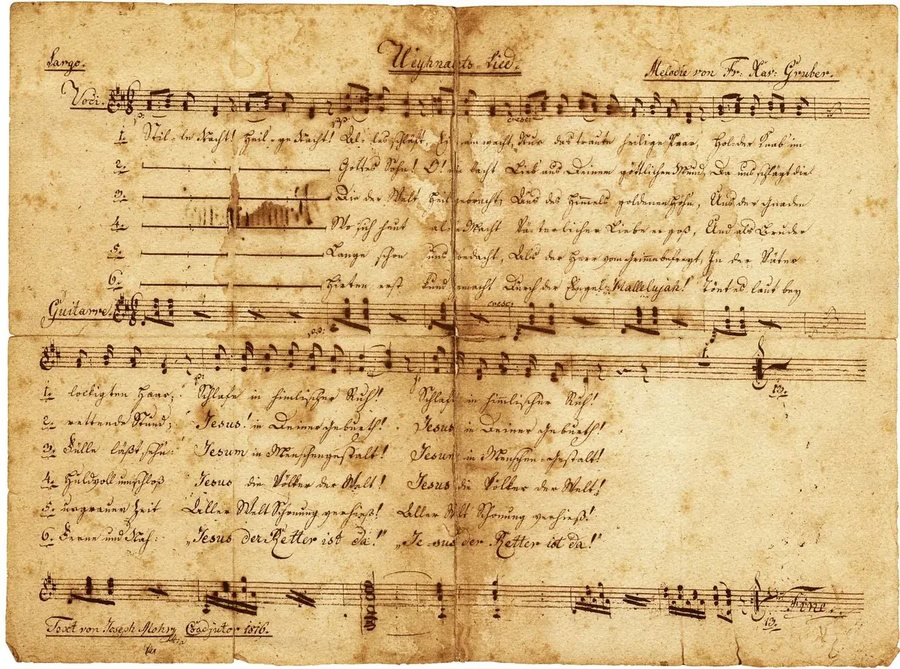
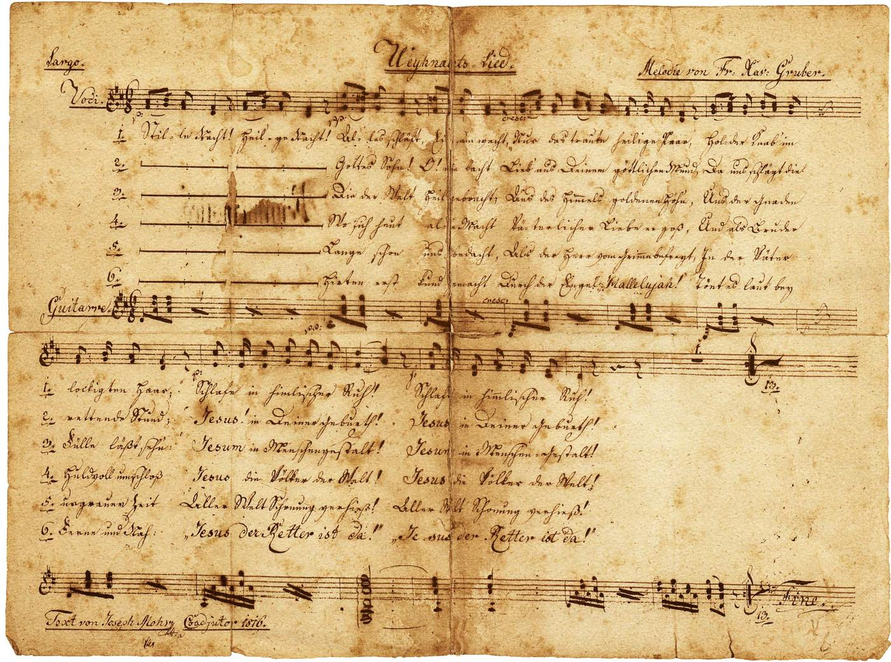
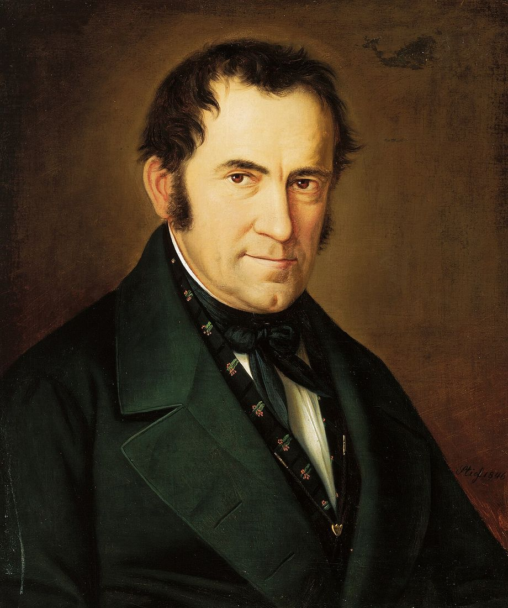
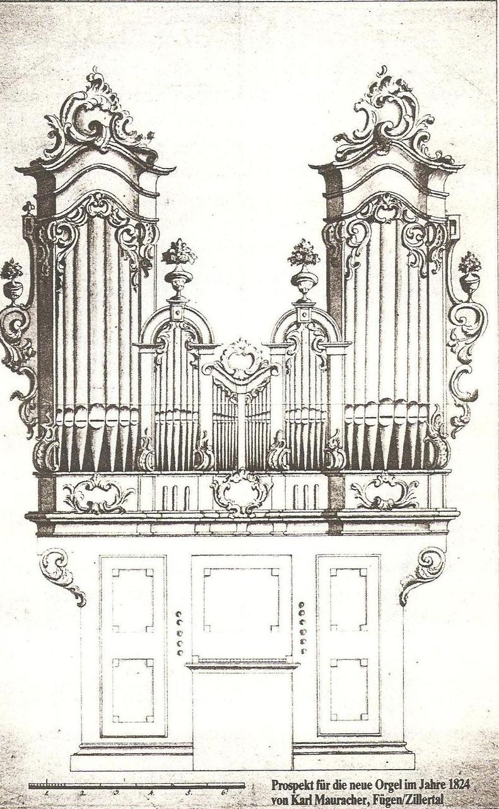
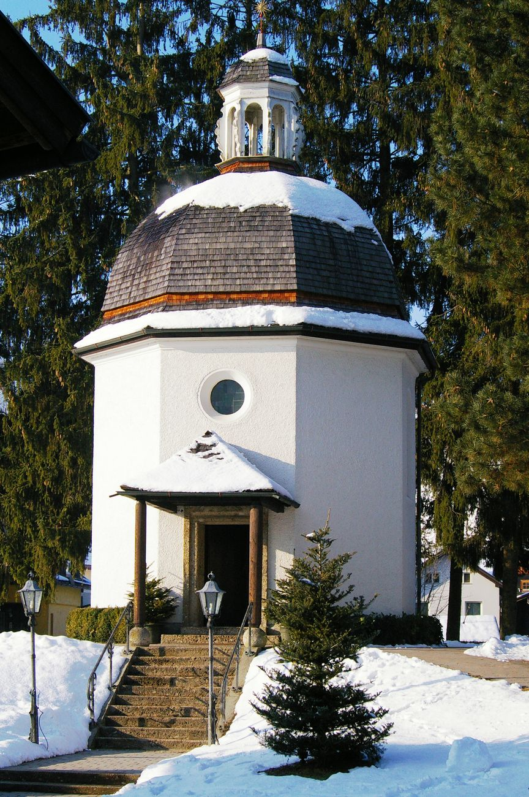
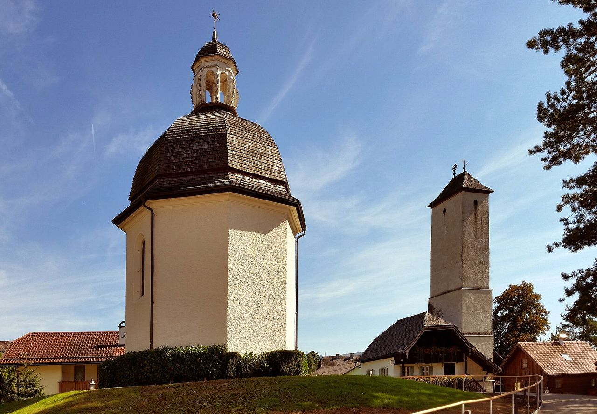

아직 펼치지 않은 카드성탄을 노래하다 · 1「고요한 밤」 악보 원고200년 전 손으로 쓴 이 악보, 우리가 아는 그 노래예요. 어디에 무엇이 적혀 있을까요?아주 오래된 악보야. 무슨 노래일까?
1818년 12월 24일오스트리아 오베른도르프 · 성 니콜라 성당
「고요한 밤」 악보 원고
1818년 성탄 전야, 잘차흐 강가의 작은 성당. 보좌 신부 모어가 기타를 치고, 오르가니스트 그루버와 둘이서 그날 막 지은 노래를 불렀어요. 기타 소리 위에 목소리를 하나씩 얹어 그 밤을 들어 보세요.
200년 전 성탄 전날 밤, 두 사람이 기타 하나로 새 노래를 불렀어. 그 노래가 지금 온 세계가 부르는 ‘고요한 밤’이야. 같이 들어 볼까?
검수 전 시안이에요(기준서 1판). 그날의 일은 그루버가 1854년에 직접 적은 글과 고요한 밤 협회의 정리를 따랐고, ‘오르간이 고장 났다’는 이야기는 짐작이라고 밝혔어요. 들리는 연주는 이 안내서가 컴퓨터로 만든 소리예요. 상상은 ‘눈 감고 상상해 보기’에서만 해요.
시안 확인용카드 단계 미리 보기
1
1816년, 산골의 시
노랫말은 곡보다 두 해 먼저 생겼어요. 1816년, 젊은 보좌 신부 요제프 모어가 잘츠부르크 남쪽 산골 마을 마리아파르에서 이 시를 썼어요.
그 무렵 마리아파르는 물러가던 바이에른 점령군 때문에 몹시 힘든 때를 보내고 있었어요. 모어는 그 모습을 곁에서 보았어요.

모어가 손으로 쓴 이 악보는 1820~1825년 무렵에 쓴 것으로 봐요. 왼쪽 아래에 ‘노랫말 요제프 모어, 보좌 신부, 1816’, 오른쪽 위에 ‘곡 프란츠 크사버 그루버’라고 적혀 있어요. 1995년에야 세상에 알려진 악보예요.
노래보다 노랫말이 먼저 생겼대. 젊은 신부님이 산골 마을에서 시를 썼어.
물어보기악보에서 ‘1816’이라는 숫자를 찾아볼까?
2
12월 24일, 낮
1818년 12월 24일. 오베른도르프 성 니콜라 성당의 보좌 신부가 된 모어가, 성당 오르가니스트이자 이웃 마을 아른스도르프의 학교 교사였던 그루버에게 시 한 편을 건넸어요.

“두 독창자와 성가대, 그리고 기타 반주에 맞는 가락을 지어 달라는 부탁과 함께”
그루버가 1854년에 적은 「진짜 내력」에서 · 독일어를 이 안내서가 우리말로 옮김
그루버는 아른스도르프 학교에서 그날 바로 곡을 지어, 저녁에 모어에게 건넸어요.
성탄 전날 낮에 신부님이 시를 건네며 부탁했대. “이 시에 가락을 붙여 주세요!” 그리고 그날 밤 바로 불렀대.
물어보기하루 만에 노래를 만들어야 한다면, 너는 어떤 노래를 만들고 싶어?
3
그날 밤의 소리
그날 밤 성탄 미사에서 두 사람이 이 노래를 처음 불렀어요. 모어는 테너로 첫째 목소리를 부르며 기타를 쳤고, 그루버는 베이스로 둘째 목소리를 불렀어요.
그루버가 남긴 몇몇 악보에는 각 절의 마지막 두 줄을 성가대가 따라 부르게 되어 있어요. 아래에서 소리를 하나씩 더해 보세요.
그날 밤의 소리1818년 12월 24일 · 기타 하나, 두 목소리, 성가대
모어의 노랫말
이 소리는 이 안내서가 컴퓨터로 만든 연주예요. 오늘 널리 부르는 가락을 모어의 악보처럼 D장조로 옮겨, 그날의 편성(기타 하나, 두 목소리, 성가대)대로 들려 드려요. 둘째 목소리와 기타 화음은 이 안내서가 붙였어요. 독일어 노랫말은 모어의 악보에서 옮겼고, 우리말은 뜻을 풀어 쓴 것이라 찬송가 가사와 달라요.
그루버는 모인 사람들이 모두 좋아했다고 적었어요. 대부분 잘차흐강에서 배를 부리고 배를 만드는 일꾼과 그 가족이었어요.
기타 하나와 목소리 둘! 마지막 두 줄은 다 같이 따라 불렀대.
물어보기기타 소리만 먼저 들어 봐. 그다음에 목소리를 하나씩 켜 볼까?
4
오르간은 정말 고장 났을까
“오르간이 고장 나서 기타로 불렀다”는 이야기가 널리 알려져 있어요. 생쥐가 오르간을 갉았다는 이야기까지 있어요. 그런데 그루버의 글에는 그런 말이 없어요. 고요한 밤 협회도 하나의 짐작으로만 소개해요.
잘츠부르크주 관광청은 오르간이 연주는 됐지만 손볼 곳이 많았다고 봐요. 두 사람이 처음부터 기타로 부르기로 했을 수도 있어요.

이듬해 오르간을 살피러 온 사람은 티롤 질러탈(질러 골짜기)의 오르간 장인 카를 마우라허였어요. 그는 1824년에 새 오르간 설계도를 그렸고, 1825년 오베른도르프의 오르간을 새로 지었어요.
노래는 마우라허를 거쳐 질러탈로 건너갔다고 봐요. 그곳의 노래하는 가족 라이너가와 슈트라서가가 유럽 곳곳에서 불렀고, 1839년 성탄에는 라이너 가족이 뉴욕 트리니티 교회 묘지에서 불렀어요. 미국 땅에서 처음 불린 것으로 보여요.
오르간이 고장 나서 기타를 쳤다는 이야기가 있는데, 정말인지는 아무도 몰라.
물어보기너라면 성탄 밤에 어떤 악기로 이 노래를 반주하고 싶어?
5
사라진 성당, 남은 노래
노래가 처음 불린 성 니콜라 성당은 잘차흐강이 여러 번 넘치며 크게 상해, 20세기 초에 헐렸어요. 그 자리에 1937년, 작은 기념 예배당이 섰어요.
노래는 성당보다 오래 남았어요. 100여 년 전의 오르골과 목소리로 들어 보세요.

이 노래는 지금 300개가 넘는 언어와 방언으로 불려요. 2011년에는 오스트리아의 무형문화유산이 되었어요. 1914년 성탄에는 제1차 세계대전의 참호에서 독일군과 영국군 병사들이 이 노래를 함께 불렀다고 전해져요.
노래가 처음 불린 성당은 없어졌지만, 그 자리에 작은 예배당이 생겼어. 노래는 지금 300개가 넘는 말로 불려!
물어보기아주 옛날 오르골 소리를 들어 볼까? 어떤 느낌이야?
눈 감고 상상해 보기
창밖은 깜깜하고, 강물 소리가 들려요. 촛불 몇 개가 켜진 작은 성당에 배를 부리는 사람들과 가족들이 어깨를 맞대고 서 있어요. 모어가 기타 줄을 고르고, 그루버가 숨을 들이쉬어요. 처음 듣는 노래가 시작돼요. 고요한 밤, 거룩한 밤.
눈을 감아 봐. 깜깜한 밤, 강가의 작은 성당이야. 촛불이 몇 개 켜져 있어. 기타 소리가 들리고, 두 사람이 노래를 시작해. 처음 듣는 노래야!
나의 자리
200년 전 강가 마을의 작은 노래가 지금 내게 왔어요. 이 노래를 부를 때, 나는 누구를 떠올리나요?
‘고요한 밤’ 첫 줄을 작게 불러 볼까?
마음에 닿는 한 줄을 고르거나 직접 써 보세요. 한 줄을 남기면 이 자리의 도장이 찍혀요. 이 기기에만 저장돼요.
더 깊이
궁금한 칸만 펼쳐 읽어도 괜찮아요.
알고 보면
보좌 신부 본당 신부를 돕는 신부예요. 모어는 1815~1817년 마리아파르에서, 그다음 오베른도르프 성 니콜라 성당에서 보좌 신부로 일했어요.
누가 지었나 한때는 미하엘 하이든 같은 이름난 작곡가가 지었다고 여겨지기도 했어요. 베를린 궁정 악단이 이 노래의 내력을 알아보자, 1854년 그루버가 「진짜 내력」을 적어 보냈어요.
모어의 얼굴 모어는 초상화를 그리게 하지 않아, 그의 얼굴을 담은 그림이 하나도 없다고 해요. 그래서 이 카드에는 그의 손글씨를 실었어요.
두 사람의 나중 모어는 1848년 바그라인에서, 그루버는 1863년 할라인에서 세상을 떠났어요.
노래가 퍼진 길
1819년 질러탈의 라이너 가족이 퓌겐 성당에서 성탄 전야에 불렀다고 전해져요.
1822년 라이너 가족이 퓌겐을 찾은 오스트리아 황제 프란츠 1세와 러시아 황제 알렉산드르 1세 앞에서 불렀어요.
1832년 슈트라서 가족이 라이프치히 음악회에서 불렀다는 신문 기사가 남아 있어요.
1833년 무렵 처음 인쇄되었어요. 지은 사람 이름도 없이, 여러 군데가 바뀐 채 ‘티롤 노래’로 실렸어요.
1839년 라이너 가족이 미국 순회 중 뉴욕 트리니티 교회 묘지에서 성탄에 불렀어요.
노랫말 여섯 절
모어의 노랫말은 여섯 절이에요. 오늘 독일어로는 보통 1절, 6절, 2절을 이 차례로 세 절만 불러요. 처음 인쇄된 슈트라서 판부터 그랬어요.
4절은 형제처럼 온 세상 민족을 품는 예수를 노래해요. 고요한 밤 협회는 전쟁 뒤 평화와 위로를 바라는 마음이 담겼다고 봐요.
우리 찬송가에도 「고요한 밤 거룩한 밤」으로 실려 있어요. 이 카드의 우리말은 찬송가 가사가 아니라 독일어 원문의 뜻을 새로 풀어 쓴 것이에요.
노래와 함께 읽는 말씀
말씀은 뜻만 옮기고, 본문은 대한성서공회 개역개정으로 이어 드려요.
누가복음 2장 7절 마리아가 아기를 강보로 싸서 구유에 뉘었어요. 1절의 ‘잠든 아기’가 이 장면이에요.
누가복음 2장 8~14절 밤에 양 떼를 지키던 목자들에게 천사가 구원자의 탄생을 알리고, 하늘의 군대가 하나님을 찬양해요. 6절의 노랫말이 이 장면이에요.
직접 가 보기

확인한 날 · 2026년 11월 18일 · 바뀌기 쉬운 정보라 정기적으로 다시 확인해요
오베른도르프는 잘츠부르크에서 북쪽으로 20km쯤 떨어진 잘차흐 강가 마을이에요. 강 건너는 독일 라우펜이에요.
기념 예배당에서는 해마다 12월 24일 오후 5시에 기념 미사가 열리고, 인터넷으로도 볼 수 있어요. 아른스도르프 학교와 할라인에도 고요한 밤 박물관이 있어요. 여는 때는 미리 확인해 주세요.
기타와 두 목소리 금박
‘그날 밤의 소리’에서 기타, 첫째 목소리, 둘째 목소리를 모두 켜고 끝까지 들으면 카드에 금박이 입혀져요.
기타·첫째·둘째 목소리를 모두 켜고 끝까지 듣기
원래 여섯 절 채색
오늘은 보통 세 절만 부르지만, 모어의 노랫말은 여섯 절이에요. 둘 가운데 하나만 해도 카드가 채색돼요.
‘그날 밤의 소리’에서 1절부터 6절까지 다 펼쳐 읽기
아이와 함께 ‘영화처럼 보기’를 끝까지 보기
근거 보기 (8)
- 고요한 밤 협회: History of the Song — 1816 마리아파르, 1818 아른스도르프·성 니콜라, 테너·베이스·기타, 오르간 짐작, 모어의 악보
- 잘츠부르크 박물관: 그루버, 「진짜 내력」(1854) 옮겨 적은 글(PDF)
- 고요한 밤 협회: Spreading of the Song — 마우라허, 라이너·슈트라서 가족, 1839 뉴욕, 300개 넘는 언어
- 고요한 밤 협회: Research Timetable — 1848·1863, 1854년 글, 성당과 예배당
- 잘츠부르크주 관광청: Myths and Legends — 오르간과 생쥐, 하이든설, 모어의 얼굴
- Wikipedia(독일어): Stille Nacht, heilige Nacht — 성가대가 마지막 두 줄을 따라 부르는 악보, 2011 무형문화유산, 1914 성탄
- Wikipedia: Silent Night Chapel — 홍수 피해, 1937년 예배당, 12월 24일 오후 5시
- Hymnology Archive: Stille Nacht — 여섯 절, 1·6·2절로 부르는 차례
그림·사진·소리 출처
- 요제프 모어 친필(잘츠부르크 박물관) · 퍼블릭 도메인 · 위키미디어 공용
- 제바스티안 슈티프 그림 · 퍼블릭 도메인 · 위키미디어 공용
- 사진: Eweht · CC BY-SA 3.0 · 위키미디어 공용
- Schmeissnerro · CC BY-SA 4.0 · 위키미디어 공용
- Gakuro · CC BY-SA 3.0 · 위키미디어 공용(고요한 밤 박물관 제공)
- 사진: Werner100359 · CC BY-SA 3.0 · 위키미디어 공용
- 사진: Michael Burgholzer · CC BY-SA 4.0 · 위키미디어 공용
- 요제프 모어, 「고요한 밤」 친필 악보 · 퍼블릭 도메인 · 위키미디어 공용
- 「그날 밤의 소리」 기타·두 목소리·성가대 · 이 안내서가 만든 컴퓨터 연주(가락: 그루버, 퍼블릭 도메인)
- 오르골 「고요한 밤」(폴리폰 원판, 19세기 말) · 퍼블릭 도메인 · 위키미디어 공용
- 에르네스티네 슈만하잉크 노래, 「Stille Nacht」(빅터 음반, 1925년 무렵) · 퍼블릭 도메인 · 위키미디어 공용 · 첫 1분만 씀
‘처음 만나는 기독교 문화’의 깊은 카드 시안이에요. 실제 인물의 사진은 쓰지 않았어요. 카드 단계와 남긴 글은 이 기기에만 저장돼요.